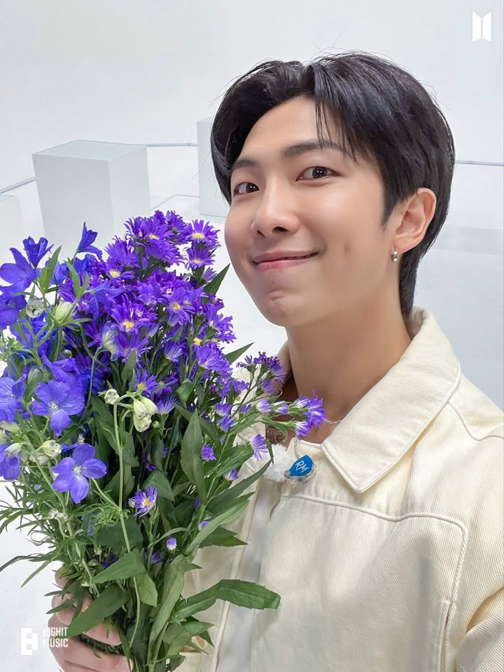
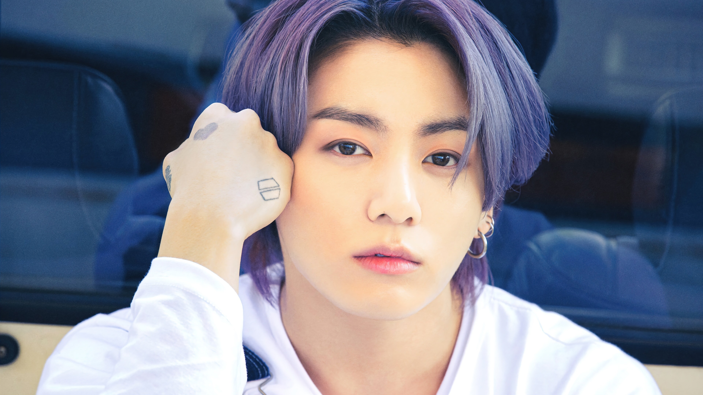

During a time when the world felt uncertain and isolating, especially
throughout the COVID pandemic, many people were forced to slow down and
sit with emotions they had never faced before. In those moments, BTS did
not try to dismiss the fear or pretend that everything was normal. Instead,
they acknowledged it — openly and honestly.
When BTS spoke at the United Nations, their message was not about success
or perfection, but about listening to yourself, accepting fear, and moving
forward at your own pace. Their words resonated with millions of people
because they reflected shared human experiences rather than distant ideals.
BTS became a safe space because they made people feel seen. Through their
music, speeches, and actions, they reminded listeners that it was okay to
feel lost, to feel tired, and to take life one step at a time. That sense
of understanding is what made their presence comforting to so many —
including me.
Lyrics That Felt Like Home
What made me admire BTS deeply was not just their music, but the way their
lyrics spoke about things people often struggle to say out loud. Their
songs never felt like they were telling listeners to be strong all the
time — instead, they acknowledged fear, self-doubt, exhaustion, and the
quiet moments of uncertainty that many people carry.
They spoke openly about ideas that felt comforting yet rarely voiced —
that it is okay to not be okay, that it is okay to not have a dream, and
that life does not have to follow a timeline set by society. Their words
gently reminded listeners that happiness does not come from meeting
expectations, but from doing what feels right for yourself, because in
the end, you are the one who has to live with your choices.
During a time when I was mentally struggling, one of their songs,
Telepathy
, felt especially comforting. It carried a warmth that
felt like someone reaching out and saying they cared, even from a
distance. The song did not try to solve anything — it simply stayed,
and that presence meant more than advice ever could.
I admire BTS because their lyrics feel honest rather than perfect. They
don’t promise that everything will be okay, but they remind people that
they are not alone in how they feel. There is this quote by Jungkook the youngest member of the group that says,
“Effort makes you. You will regret someday if you don’t do your best now. Don’t think it’s too late but keep working on it.
It takes time, but there’s nothing that gets worse due to practicing. So practice. You may get depressed, but it’s evidence that you are doing good.”
these words has given me strength and courage to do without thinking about the outcome but to focus on giving my everything and trying.
Over time, those words began to feel like home — a place to return to whenever things felt overwhelming.
Messages That Stayed
Some words stayed with me long after the songs ended.
That it’s okay to move slowly.
That it’s okay to rest without guilt.
That not having everything figured out doesn’t mean you’re failing.
That choosing yourself, even quietly, is still choosing yourself.
And sometimes, just knowing someone understands is enough.
Click below when you need reassurance.
Seven Voices, One Comfort
RM
“If you want to love others, I think you should love yourself first.”

Jin
“Even if you’re not perfect, you’re still you — and that’s enough.”
SUGA
“It’s okay if you don’t have a dream. Just being happy is enough.”
j-hope
‘I think there’s a beauty in growing old. It’s the times we’re together that matters, not how we look.”
Jimin
“Go on your path, even if you live for a day.”
V
“When things get hard, stop for awhile and look back and see how far you’ve come. Don’t forget how rewarding it is. You are the most beautiful flower, more than anyone else in this world.”
Jungkook
“There is no knowing what will come, but hard work will get us somewhere.”

Words Left Behind by ARMY
“Their music stayed with me when everything else felt distant.”